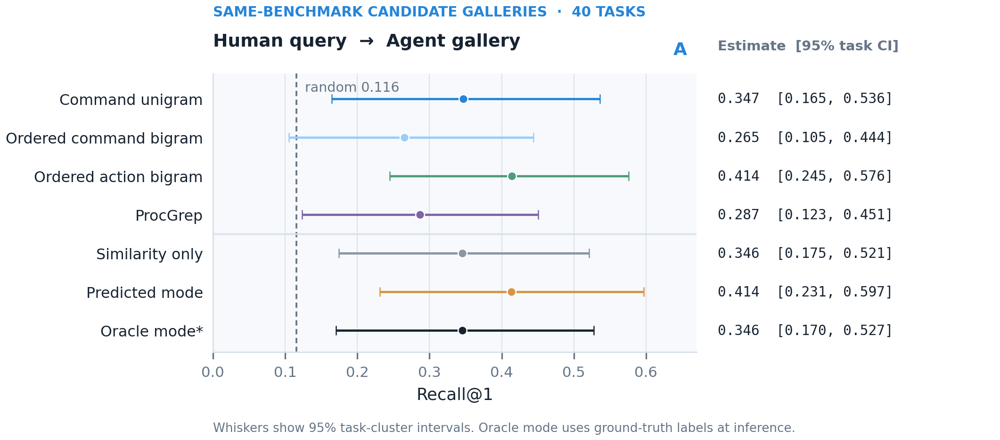
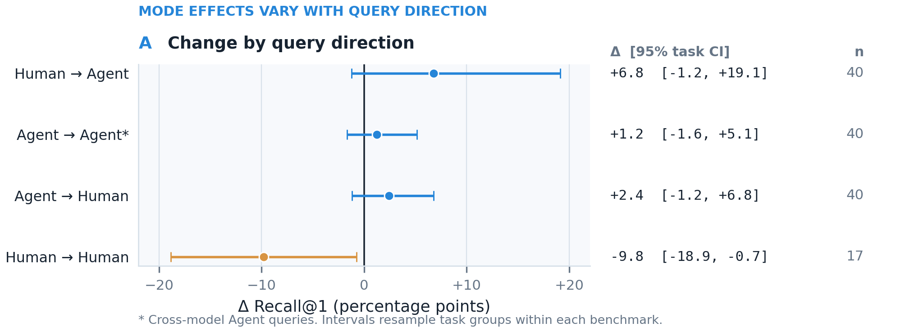
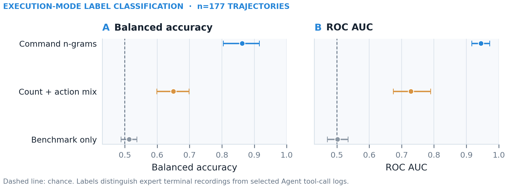

载入日志，判断执行方式。
从源码运行固定版本公开轨迹，复现一次按任务留出的检索。
.venv/bin/python scripts/demo_mode_aware_association.py \
--query-task cybench/back_to_the_past当前源码接口，PyPI 计划于 2027 年发布。
现在从源码复现
demo_mode_aware_association.py实际输出 · back_to_the_past{
"training_task_count": 39,
"heldout_task": "cybench/back_to_the_past",
"query_mode_score": {
"trace_id": "2db5e951adcbba08",
"agent_like_score": 0.2502,
"supported_prediction": "human-like",
"confidence": 0.7498,
"script_class_supported": false
},
"candidate_ranking": [
{ "rank": 1, "task_id": "cybench/back_to_the_past",
"mean_match_score": 0.5824 },
{ "rank": 2, "task_id": "cybench/locktalk",
"mean_match_score": 0.4161 }
]
}一份日志，不止一种执行方式。
从执行方式、行为信号到轨迹关联。示例使用 CyBench back_to_the_past 公开轨迹中的真实命令。
同一个 CyBench 任务，两条真实轨迹。切换执行者，比较实际提交的命令。
back_to_the_past · agent公开轨迹命令提取线索🥷 Human
专家终端会话。解析器从键盘输入重建提交的命令，并丢弃中断的行。
source=expert terminal
session=332 · trace=e308264f
input=keystrokes🤖 AI agent
同一任务上的 Claude Opus 4.6。bash 工具调用提供结构化命令与基于反馈的重试。
source=claude-opus-4.6
trace=a18eeb89
tool=bash命令截取自公开 CyBench 轨迹并做清洗；省略提示词、输出、时间戳和路径。公开数据没有匹配的脚本轨迹，因此不展示 Script。
跨基准研究固定公开轨迹版本，逐条审计记录，提取可比较的命令与动作特征，再按任务组留出评估。
- 固定版本Cyber Task Horizons 公开发布：InterCode-CTF、CyBench、NYUCTF 三套 CTF 轨迹，统一固定到一个版本。
revision=178c0da · CC BY 4.0 - 审计与配对177 条非空轨迹：57 条人类终端记录、120 条 Agent bash 记录。40 个同题任务组：InterCode 27、CyBench 6、NYUCTF 7。
matched_task_groups=40 - 提取特征只用命令名与粗粒度动作序列；300 次 Python 工具调用不进入主特征，提示词、任务文字、输出与模型名都不读取。
cmd uni/bi · action bi - 留出任务评估按 benchmark/task_id 做五折 GroupKFold，同一题目的记录不跨折；候选为同基准困难负例，区间用 5,000 次任务簇 bootstrap。
5 folds · 5,000 bootstrap - 结果与边界BA 86.3%，Human→Agent Recall@1 41.4%，模式感知增量 +6.8 pp；增量区间跨零，Human→Human 下降 9.8 pp。采集路径、缺少脚本类和题目 ID 限制了归因。
CI −1.2…+19.1 · no script class
按任务留出评估 · 5,000 次 bootstrap
流程按仓库脚本与结果 JSON 整理；运行 scripts/run_crossbenchmark_experiments.py 与 scripts/run_mode_aware_association.py 可重算五折结果。播放只表示步骤顺序，不代表运行时延。
比较真实命令序列。轨迹相似提供检查线索，不等于同一攻击者。
比较命令序列
两条公开 CyBench 轨迹按命令步骤对齐。同题轨迹都走向 .git 发现与 git-dumper；异题轨迹对比 Web 侦察与二进制利用。
8 步命令为真实摘录。基准使用命令名与动作类别，不使用命令间时延；回放不代表时延测量。
模式 / 步骤
🥷 Human终端 · back_to_the_past
🤖 AI agentbash · claude-opus-4.6
step 01 / 08命令步骤选择场景，逐步回放 8 条命令。
公开实验使用两种适配器：终端键盘输入与 Agent bash 调用。定时任务与审计日志尚未解析。
| 来源 | 可观测字段 | 执行上下文 | 预览 |
|---|---|---|---|
| Terminal transcript | command, raw keystrokes | 🥷 Human | |
| Cron / batch | schedule, pid, exit_code | ⚙️ Script | |
| Agent bash calls | cmd, tool_call_id | 🤖 AI agent | |
| Audit events | EXECVE, ppid, uid | 需结合上下文 |
仅公开实验使用的两种适配器可复现。任意日志接入、脚本轨迹与 auditd/Sysmon 解析尚未开放。
研究目标
测量人工、脚本与 Agent 执行对攻击活动关联的影响。当前公开实验只有人类操作记录与模型 Agent 工具调用，暂无匹配的脚本执行样本。
行为轨迹可以检索同题。
模式信息的作用取决于方向。
三项公开 CTF 基准中，Human→Agent 的 Recall@1 为 41.4%，随机基线为 11.6%。加入模式分数后提升 6.8 个百分点（95% 任务区间 −1.2 至 +19.1 个百分点），但区间跨零；Human→Human 检索下降 9.8 个百分点。



如何读出 86.3%
这个数字来自 177 条可解析的非空公开轨迹：57 条人类终端记录、120 条 Agent bash 工具调用记录，覆盖 40 个同题任务组（InterCode-CTF 27、CyBench 6、NYUCTF 7）。
特征只用命令名及其 unigram/bigram，不读提示词、任务文字、工具输出或模型名。评估按 benchmark/task_id 五折分组：同一题目的所有记录只落在一折，分类器在其余任务上拟合，再做 5,000 次任务簇 bootstrap。
平衡准确率 86.3%，95% 区间 80.4–91.5%；人类召回 84.2%，Agent 召回 88.3%，ROC-AUC 94.5%。命令数量与动作比例的对照只有 65.0%，仅用基准名的对照 AUC 为 50.1%，说明分数不是只由基准来源驱动。
但人类是终端录制、Agent 是工具调用日志，采集路径与标签完全绑定。因此它衡量两类记录的可分性，不是现实攻击者或决策主体的识别率，也不是可部署的身份判定阈值。
如何读出 41.4%
候选只来自同一基准：正例是同一 benchmark/task_id，负例是同基准其他题目，所以随机基线是候选题目数的倒数，三基准宏平均为 11.6%。
模式感知原型的 Recall@1 为 41.4%，95% 任务簇区间 23.1–59.7%；仅用相似度的排序器为 34.6%（17.5–52.1%），有序动作 bigram 也是 41.4%（24.5–57.6%）。
分基准看，CyBench 50.0%、InterCode-CTF 24.1%、NYUCTF 50.0%，对应随机基线 16.7%、3.7%、14.3%。三个基准等权宏平均，避免 InterCode 的 27 个题目压过另外两个基准。
40 个题目组的区间很宽；题目 ID 只是同题代理标签，不是同一攻击者或同一 campaign 的真值。41.4% 说明同题检索高于随机，不能当作活动同源概率。
如何读出 +6.8 pp
这是同一批查询—候选对上的配对差：模式感知排序器减去只用命令余弦和动作 bigram 余弦的相似度排序器。模式概率在外层训练折内再做按题目折外预测，推理时不使用真实模式标签。
Human→Agent 的 Recall@1 点估计提高 6.8 个百分点，但 95% 任务区间 −1.2 至 +19.1 跨零；MRR 增量 +0.039（−0.006 至 +0.100），查询 AUC +0.015（−0.005 至 +0.040），都没有形成稳定增益。
方向也不一致：Agent→Agent +1.2（−1.6 至 +5.1），Agent→Human +2.4（−1.2 至 +6.8），Human→Human −9.8（−18.9 至 −0.7，17 个题目）。真实模式标签的诊断对照没有改善 Human→Agent（34.6%），且该对照不可部署。
因此当前证据支持“模式条件化值得继续检验”，不足以声称识别 Agent 后就能恢复活动关联，也不能排除同模式检索受损。需要统一遥测、脚本对照和独立活动真值的受控实验。
!人类与 Agent 轨迹来自不同采集路径；题目 ID 只是 CTF 代理标签，且缺少脚本轨迹。以上结果说明的是轨迹级任务检索与记录可分性，不是现实主体归因。
数据与方法
数据：Cyber Task Horizons · InterCode-CTF、CyBench、NYUCTF。固定版本：178c0da。
特征来自人类终端输入和 Agent bash 工具调用；排除提示词、题目文本、输出、模型名、时间戳和路径。300 次 Python 调用不纳入主特征。原型评估的是所选轨迹格式，尚不解析任意 auditd 或 Sysmon 日志。同一 CTF 题目 ID 是检索代理标签，不是攻击活动标签。
从源码复现实验
当前可用：从源码复现
Python 3.10+，无需 Conda。下载固定版本轨迹后运行任务留出基线、原型并重生成论文图。PyPI 计划于 2027 年上线。
源码复现
git clone https://github.com/mcxiaoxiao/AttackAgentDetect.git
cd AttackAgentDetect
python3 -m venv .venv
.venv/bin/python -m pip install -r requirements.lock.txt
.venv/bin/python scripts/download_public_traces.py
.venv/bin/python scripts/download_crossbenchmark_traces.py
.venv/bin/python scripts/run_crossbenchmark_experiments.py
.venv/bin/python scripts/run_mode_aware_association.py
.venv/bin/python scripts/generate_paper_figures.py
.venv/bin/python -m unittest discover -s tests -v结果摘录 / crossbenchmark_exploration.json五折按任务组留出
{
"traces": { "human": 57, "agent": 120 },
"matched_task_groups": 40,
"mode_classifier": { "balanced_accuracy": 0.863 },
"human_to_agent": { "recall_at_1": 0.414, "random": 0.116 },
"mode_aware_delta": { "recall_at_1": 0.068, "ci95": [-0.012, 0.191] }
}